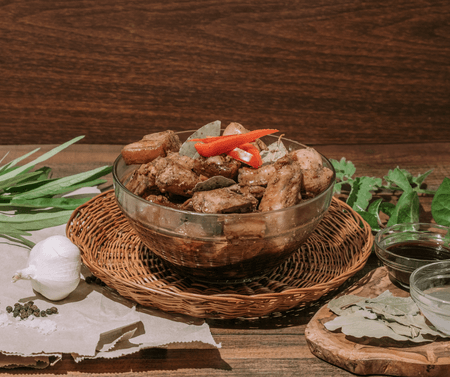

Chicken Adobo Recipe

Traditional dish where every Filipino family loves to cook and eat. Eat with rice.
Ingredients
- 1 1/2 pound chicken thighs
- 1 tbsp vegetable oil
- 4 cloves garlic
- 1 onion, minced
- 1/4 cup soy sauce
- 1/4 cup vinegar
- 1/4 cup water
- 1 bay leaf
- salt and pepper to taste
Instructions
- Heat oil in a large pot over medium heat. Saute onion and garlic.
- Add chicken until golden brown.
- Pour in soy sauce, vinegar, water, and bay leaf.
- Bring to a boil, reduce heat to simmer.
- Simmer for 1 hour, or until chicken is very tender.